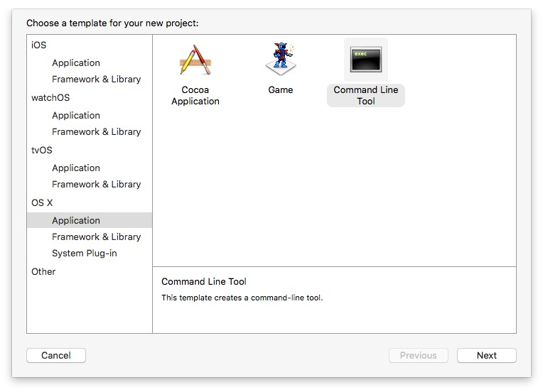
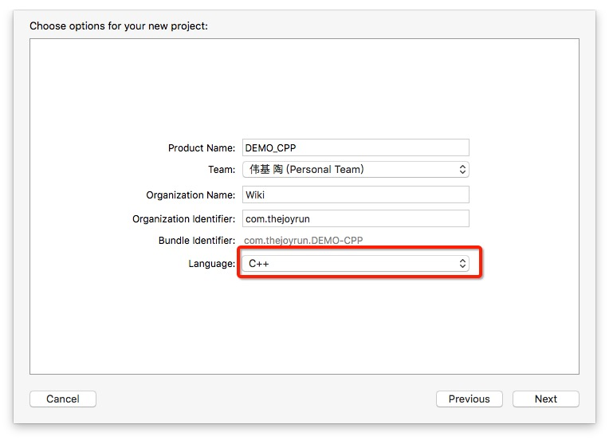
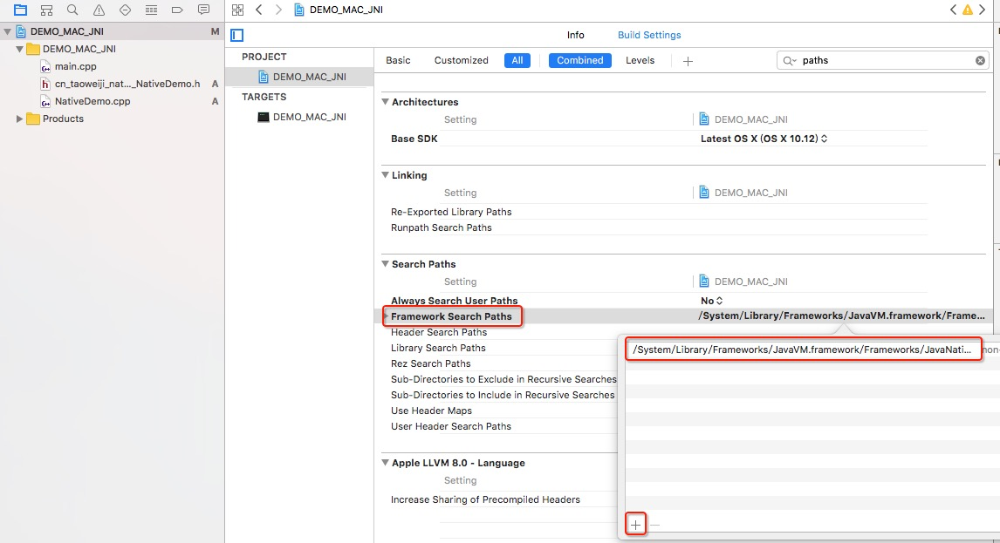
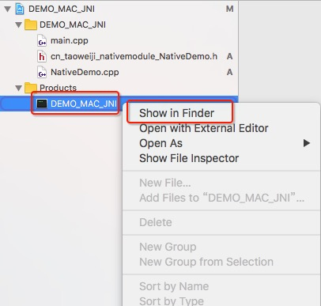

Android和iOS开发都支持C++开发，可以一套代码多平台使用。同时C++难以反编译的特性也可以为Android开发带来代码的保密，另一native特性也可以提高代码的运行效率。
一、为什么使用C/C++
- 便于移植，用C/C++写得库可以方便在其他的平台上再次使用。
- 代码的保护，由于java层代码很容易被反编译，而C/C++库反汇难度较大。
- 提高程序的执行效率，将要求高性能的应用逻辑使用C/C++开发，从而提高应用程序的执行效率。
- 访问现有开源库，需要访问底层的API或引用一些只有C/C++的库。
二、开发工具介绍
尽管Android Studio可以同时编写C++和Java代码，写完就可以编译运行，但是对联想和错误提示并不是非常友好，个人建议C++的整体代码使用Visual Studio或Xcode编译开发，联想功能非常友好，编译速度很快，调试也非常方便。
- Visual Studio（PC）
- Xcode（Mac）
- Android Studio（多平台）
- eclipse（多平台）
三、第一行代码
1. 如何在Objective-C项目中使用C++；
在Objective-C使用C/C++非常简单，仅仅需要把.m后缀的文件改成.mm即可使用C++，我们通常不会把.mm的文件写到整个项目都有，而是设计一个接口，用来做两个语言之间的桥梁，他们之间的交互仅仅在这个接口。
要点：String类型转换
NSString * ocString = @"Hello World,OC"; std::string cppString = [ocString UTF8String]; std::cout<<cppString<<std::endl; std::string cppString2 = "Hello World,C++"; NSString *ocString2= [NSString stringWithCString:cppString2.c_str() encoding:[NSString defaultCStringEncoding]]; NSLog(@"%@",ocString2);
|
记得要include相关的文件
#include <stdio.h> #include <iostream>
|
2.在普通的JAVA项目中使用JNI编程
由于我是在MAC下办公，所以这里就介绍如何在MAC下进行JNI开发，在Windows平台下的Virtual Studio也很简单。
第一步：在Xcode下创建一个普通的C++项目


第二步：关联JavaVM的Framework
路径：
/System/Library/Frameworks/JavaVM.framework/Frameworks/JavaNativeFoundation.framework/

第三步：创建头文件，用于和Java交互 cn_taoweiji_nativemodule_NativeDemo.h
#include <JavaVM/jni.h> #ifndef _Included_cn_taoweiji_nativemodule_NativeDemo #define _Included_cn_taoweiji_nativemodule_NativeDemo #ifdef __cplusplus extern "C" { #endif JNIEXPORT jint JNICALL Java_cn_taoweiji_nativemodule_NativeDemo_add (JNIEnv *, jclass, jint, jint); JNIEXPORT void JNICALL Java_cn_taoweiji_nativemodule_NativeDemo_say (JNIEnv *, jclass, jstring); JNIEXPORT jstring JNICALL Java_cn_taoweiji_nativemodule_NativeDemo_getInfo (JNIEnv *, jclass); JNIEXPORT void JNICALL Java_cn_taoweiji_nativemodule_NativeDemo_nativeToJava (JNIEnv *, jclass, jobject); #ifdef __cplusplus } #endif #endif
|
第四步：创建实现 NativeDemo.cpp
#include "cn_taoweiji_nativemodule_NativeDemo.h" #include <string> JNIEXPORT jint JNICALL Java_cn_taoweiji_nativemodule_NativeDemo_add(JNIEnv *, jclass, jint param1, jint param2) { jint result = param1 + param2; return result; } JNIEXPORT void JNICALL Java_cn_taoweiji_nativemodule_NativeDemo_say(JNIEnv *env, jclass, jstring param) { const char *param_char = env->GetStringUTFChars(param, NULL); std::string str = param_char; } JNIEXPORT jstring JNICALL Java_cn_taoweiji_nativemodule_NativeDemo_getInfo(JNIEnv *env, jclass) { std::string str = "Hi,I am C++."; jstring result = env->NewStringUTF(str.c_str()); return result; } JNIEXPORT void JNICALL Java_cn_taoweiji_nativemodule_NativeDemo_nativeToJava(JNIEnv * env, jclass, jobject obj) { jclass cls = env->FindClass("cn/taoweiji/nativemodule/NativeDemo"); jmethodID mid = env->GetMethodID(cls, "subtract", "(II)I"); int result = (int) env->CallIntMethod(obj, mid, 10, 2); }
|
第五步：编译生成JNI文件，按 ⌘+B (Product -> Build).
编译后文件

根据自己的电脑环境，查找编译后的文件，我的路径是
/Users/Wiki/Library/Developer/Xcode/DerivedData/DEMO_MAC_JNI-clxymnzifegyfaajsaattzgxqfbr/Build/Products/Debug/DEMO_MAC_JNI
第六步：编写JNI接口
package cn.taoweiji.nativemodule; /** * 包名和类名称一定要和前面的C++头文件对应 * cn_taoweiji_nativemodule_NativeDemo.h */ public class NativeDemo { public static native int add(int param1, int param2); public static native void say(String name); public static native String getInfo(); public static native void nativeToJava(NativeDemo nativeDemo); public int subtract(int param1, int param2) { System.out.println("NativeDemo:" + String.format("%s - %s = %s", param1, param2, param1 - param2)); return param1 - param2; } }
|
第七步：调用C++
public class Main { static { System.load("/Users/Wiki/Library/Developer/Xcode/DerivedData/DEMO_MAC_JNI-clxymnzifegyfaajsaattzgxqfbr/Build/Products/Debug/DEMO_MAC_JNI"); } public static void main(String[] args) { System.out.println("Hello World!"); int result = NativeDemo.add(1, 2); System.out.println("1+2=" + String.valueOf(result)); NativeDemo.say("Hello,I am Java."); System.out.println("getInfo:" + NativeDemo.getInfo()); NativeDemo.nativeToJava(new NativeDemo()); } }
|
3. 在ANDROID项目中使用JNI
Android的JNI开发，C++文件必须编写在独立的module里面，Java接口代码可以编写在app(module)，也可以和C++放在同一个module，通过gradle关联。详细代码请自行下载demo浏览
gradle配置（NativeModule） apply plugin: 'com.android.library' android { compileSdkVersion 23 buildToolsVersion "24.0.0 rc2" defaultConfig { minSdkVersion 14 targetSdkVersion 23 versionCode 1 versionName "1.0" } buildTypes { release { minifyEnabled false proguardFiles getDefaultProguardFile('proguard-android.txt'), 'proguard-rules.pro' ndk { moduleName "joyrun" stl "stlport_static" ldLibs "log"//用于解决__android_log_print abiFilters "armeabi", "armeabi-v7a", "x86", "x86_64", "arm64-v8a" //add -fexceptions to allow throw error //add -w to "format not a string literal and no format arguments [-Werror=format-security" cFlags "-w -fexceptions" } } } } dependencies { compile fileTree(dir: 'libs', include: ['*.jar']) }
|
编写JNI接口
// NativeDemo.java package cn.taoweiji.nativemodule; public class NativeDemo { public static native int add(int param1, int param2); }
|
编写C++接口代码，JNI文件目录默认是module/src/main/jni，可以通过gradle配置改变
// cn_taoweiji_nativemodule_NativeDemo.h #include <jni.h> #ifndef _Included_cn_taoweiji_nativemodule_NativeDemo #define _Included_cn_taoweiji_nativemodule_NativeDemo #ifdef __cplusplus extern "C" { #endif /* * Class: cn_taoweiji_nativemodule_NativeDemo * Method: add * Signature: (II)I */ JNIEXPORT jint JNICALL Java_cn_taoweiji_nativemodule_NativeDemo_add(JNIEnv *, jclass, jint, jint); #ifdef __cplusplus } #endif #endif
|
// NativeDemo.cpp #include "cn_taoweiji_nativemodule_NativeDemo.h" JNIEXPORT jint JNICALL Java_cn_taoweiji_nativemodule_NativeDemo_add(JNIEnv *, jclass, jint param1, jint param2) { jint result = param1 + param2; return result; }
|
调用
// 静态加载 static { System.loadLibrary("joyrun"); } //调用 int result = NativeDemo.add(1,2); Log.i("1+2=",String.valueOf(result));
|
四、NDK开发要点
编译文件分析
将NativeModule编译后生成的aar文件后缀改成.zip解压，可以发现里面有个jni文件，打开可以看到”armeabi”, “armeabi-v7a”, “x86”, “x86_64”, “arm64-v8a”等文件夹，再打开可以看到是以lib前缀的so格式文件，这就是编译后的native层文件，我们平常引用的第三方库（百度地图）也是要添加这些文件到我们的libs文件夹，不同的名称代表着不同平台相关的编译文件，市面上大多数的手机都是arm架构CPU，x86架构的手机几乎没人用（genymotion模拟器属于x86平台），所以我们通常发布APP不会考虑x86平台，仅仅添加armeabi文件即可，但是在开发过程中建议也添加x86的so文件，以方便我们在模拟器上运行。
运行库
Android平台带有一个微型的C运行库支持库，成为系统运行库。该运行库不支持一下特性：C标准库、异常支持、RTTI支持。NDK提供了用于补充系统运行库功能的一些额外的C++运行库。
| C++运行库 |
C++异常支持 |
C++RTTI |
C++标准库 |
| 系统库 |
No |
No |
No |
| GAbi++ |
No |
Yes |
No |
| STLport |
No |
Yes |
Yes |
| GNU STL |
Yes |
Yes |
Yes |
STLport
STLport是一个开源的、多平台的C标准库实现。它提供一个C标准库头文件的完整集合以及对RTTI的支持。
GNU STL
GNU标准C库，也叫libstdc-v3，是Android NDK最全面的标准C运行库。它是一个正在开发的、以实现ISO标准C库为目标的开源项目。
gradle配置
- STL运行库引用
- “armeabi”, “armeabi-v7a”, “x86”, “x86_64”, “arm64-v8a”等平台配置
- C++输出logcat配置
- 一个编译异常解决
- 异常捕获
// 生成so文件的名称 moduleName "joyrun" // 引入STL标准库 stl "stlport_static"//gnustl_static //用于解决__android_log_print ldLibs "log" abiFilters "armeabi", "armeabi-v7a", "x86", "x86_64", "arm64-v8a" //添加编译的平台 //add -fexceptions to allow throw error //add -w to "format not a string literal and no format arguments [-Werror=format-security" cFlags "-w -fexceptions"
|
LOGCAT输出
#include <android/log.h> #define LOGI(...) __android_log_print(ANDROID_LOG_INFO, "tag_joyrun", __VA_ARGS__) #define LOGE(...) __android_log_print(ANDROID_LOG_ERROR, "tag_joyrun", __VA_ARGS__) LOGE("Hello Logcat");
|
类型转换
// std::string -> jstring std::string str = "Hello World"; jstring result = env->NewStringUTF(str.c_str()); // jstring -> std::string jstring param; const char *param_char = env->GetStringUTFChars(param, NULL); std::string str = param_char; // jboolean 两个值 JNI_TRUE、JNI_FALSE
|
C++调用JAVA代码
//Java
public static native void nativeToJava(NativeDemo nativeDemo); public int subtract(int param1, int param2) { Log.e("NativeDemo", String.format("%s - %s = %s", param1, param2, param1 - param2)); return param1 - param2; }
|
//C++
JNIEXPORT void JNICALL Java_cn_taoweiji_nativemodule_NativeDemo_nativeToJava(JNIEnv * env, jclass, jobject obj) { // 调用Java方法 jclass cls = env->FindClass("cn/taoweiji/nativemodule/NativeDemo"); jmethodID mid = env->GetMethodID(cls, "subtract", "(II)I"); int result = (int) env->CallIntMethod(obj, mid, 10, 2); //常见类型转换例子 //String getInfo(); //-> ()Ljava/lang/String; //PackageInfo getPackageInfo(String packageName, int flags); //-> (Ljava/lang/String;I)Landroid/content/pm/PackageInfo;; }
|
一键生成从JAVA到C++接口代码脚本
文件：autojavah.sh
#!/bin/sh export ProjectPath=$(cd "../$(dirname "$1")"; pwd) export TargetClassName="co.runner.app.jni.NativeDemo" export SourceFile="${ProjectPath}/app/src/main/java" export TargetPath="${ProjectPath}/jni-joyrun/src/main/jni" cd "${SourceFile}" javah -d ${TargetPath} -classpath "${SourceFile}" "${TargetClassName}" echo -d ${TargetPath} -classpath "${SourceFile}" "${TargetClassName}"
|
五、C++面向对象及标准库入门
C++类定义
#ifndef Demo_hpp #define Demo_hpp #include <stdio.h> #include <string> class Demo{ public: std::string name; int age = 0; void say(); static int add(int param1,int param2) { return param1 + param2; } }; #endif
|
类方法的实现
#include "Demo.hpp" #include <iostream> void Demo::say() { std::cout<<"name = "<<name<<",age = "<<age<<std::endl; }
|
对象创建及访问对象的成员
Demo d1; Demo * d2 = new Demo; d1.say(); d2->say(); int result = Demo::add(1,2); std::cout<<"1 + 2 = "<<result<<std::endl;
|
LIST链表
#include <stdio.h> #include <iostream> #include <list> #include "Demo.hpp" std::list<Demo> * demos = new std::list<Demo>; Demo * demo = new Demo; demo->name = "Wiki"; demo->age = 24; demos->push_back(*demo); demo = new Demo; demo->name = "Wiki2"; demo->age = 25; demos->push_front(*demo); for (std::list<Demo>::iterator iter = demos->begin(); iter != demos->end(); ++iter) { iter->say(); } for (std::list<Demo>::reverse_iterator iter = demos->rbegin(); iter != demos->rend(); ++iter) { iter->say(); } std::list<Demo>::iterator iter = demos->begin(); advance(iter, 1); iter->say();
|
指针、引用和值
在C++中，函数可以用许多不同的方法传递参数，比如通过指针、引用或是直接传值。
void handle1(Demo *p); void handle1(Demo& p); void handle1(Demo *demo);
|
堆和栈的理解
- 栈（stack）：由操作系统自动分配释放 ，存放函数的参数值，局部变量的值等。其操作方式类似于数据结构中的栈；
- 堆（heap）： 一般由程序员分配释放， 若程序员不释放，程序结束时可能由OS回收，分配方式倒是类似于链表。
Demo d1; Demo * d2 = new Demo; char c; char *p = new char[3];
|
垃圾回收
new和C++ delete运算符用于动态分配和撤销内存的运算符，自己new出来的对象就要通过delete释放内存。
六、开发中常用的方法及注意事项（坑）
时间戳获取方法。
注意so文件防盗用问题。
- 尽量避免调用与平台有关的方法，避免移植带来问题。
- JNI接口的包名不能带有下划线‘_’。
相关源代码：